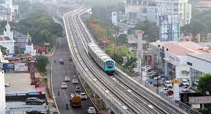

ERNAKULAM
The district is endowed with a rich flora and fauna spread over the mainland and the hinterlands. Two backwaters and three major rivers have been instrumental in the agricultural, industrial and trade development of Ernakulam. Although the construction of huge overbridges such as the Goshree and Varapuzha in recent years have reduced the importance of water-transportation it is still a great attraction for the domestic and international tourists. Monsoon has not been unkind to Ernakulam District all these years. Mangrove forests here come to around 465 square KMs. The foothill areas such as Kodanad and Kothamangalam have a relatively stable eco-system. Besides paddy and coconuts, cash crops too are produced in the district. Ernakulam is the biggest pineapple producing district in Kerala. Two bird sanctuaries in the district,
Thattekkad and Mangalavanam, are shelter to the endangered species of birds and primordial spiders.

PUTHUVYPE BEACH
Puthuvype is a 3 kms long beach situated in Puthuvype near the lighthouse in Kochi, Kerala.
One among the least explored beaches of Kochi, the highlight of the beach is also a lighthouse. Still unexploited by tourists, the beach is crowded by the fisherfolks at work. You can visit on a weekend for a perfect break from the city in peace and solitude.
JEWESH TOWN
Historic Jew Town, the heart of the once-thriving Cochin Jewish community, is known for its old-world charm and 16th-century Paradesi Synagogue. Quaint shops around Synagogue Lane and Jew Town Road sell antiques, carvings, and vintage collectibles, along with Keralan crafts and aromatic spices. Laid-back outdoor cafes and artsy eateries,
some in heritage buildings, serve local specialties and Western fare.

VYPEEN ISLAND
Vypeen is one of the popular places to visit in Ernakulam in one day and certainly one of the best islands in Kerala. A short and beautiful ferry ride from the city will take to this serene island which is dotted with beaches, backwaters and an array of restaurants and hotels. A desktop worthy scenery away from the bustling environment is what
makes Vypeen island one of the best places to visit in Ernakulam for lovers.

THATTEKKAD Bird Sanctuary
One of the first bird sanctuaries in Kerala and undeniably a haven for nature enthusiasts. In the words of Salim Ali (world famous ornithologist), Thattekkad is the “richest bird sanctuary in India” since it is home to hundreds of different endangered species of migratory birds. This thick deciduous forest has plantations of mahogany, teak, rosewood and rubber running through it. Make sure to bring along a pair of binoculars to get a glimpse of the birdlife. The best time to visit would be between November and March.
Location: Kothamangalam-Pooyamkutty Road, Nyayapally PO, Thattekad, Kerala 686681